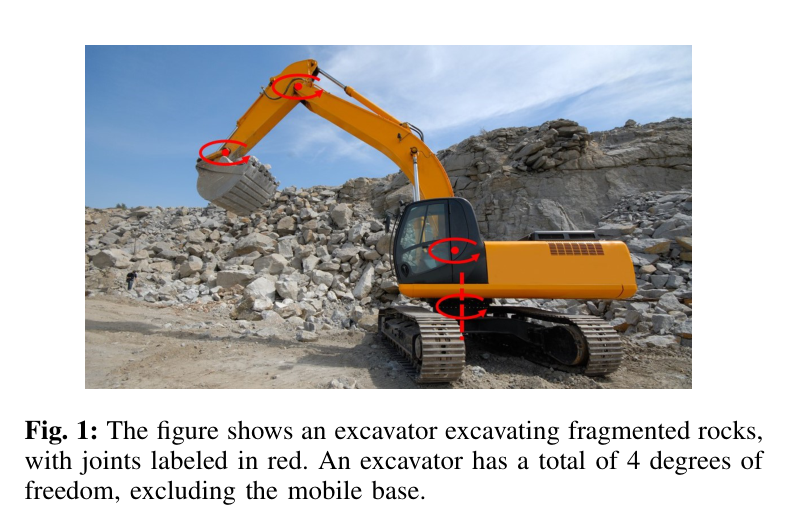
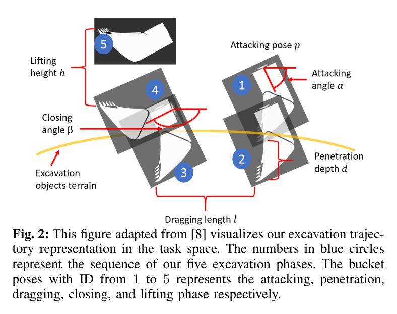
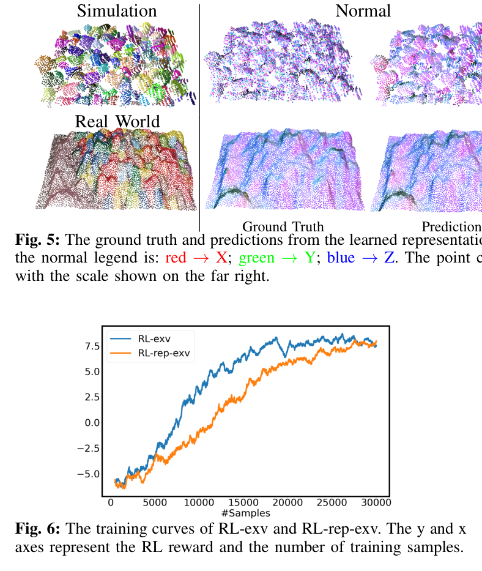
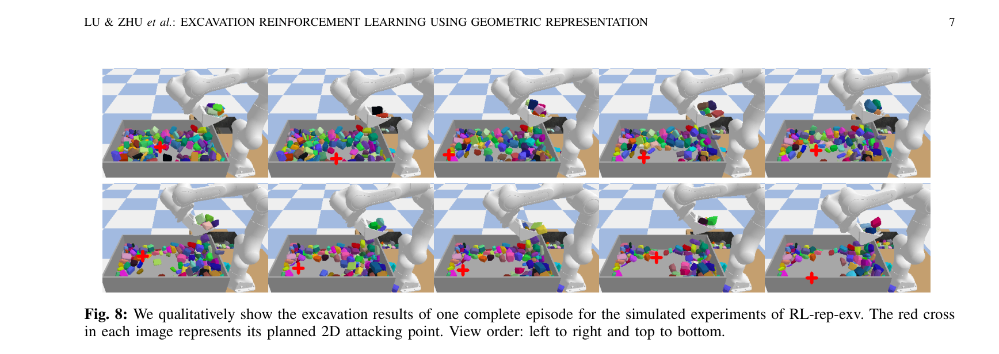
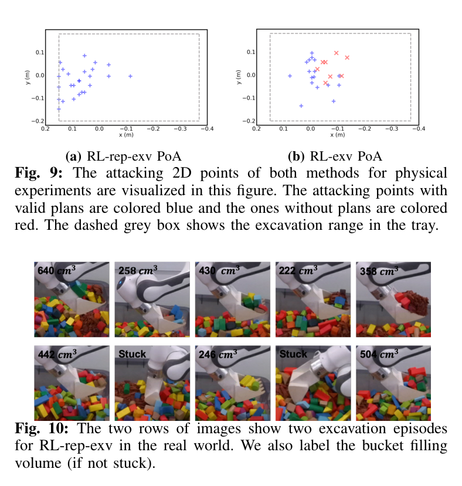
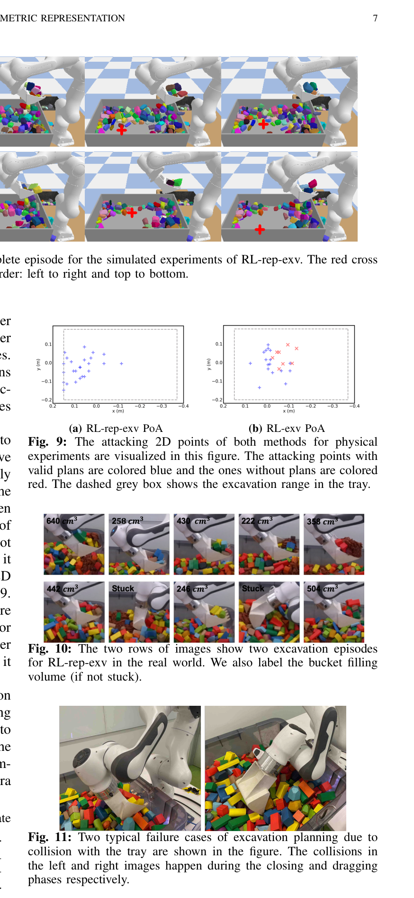
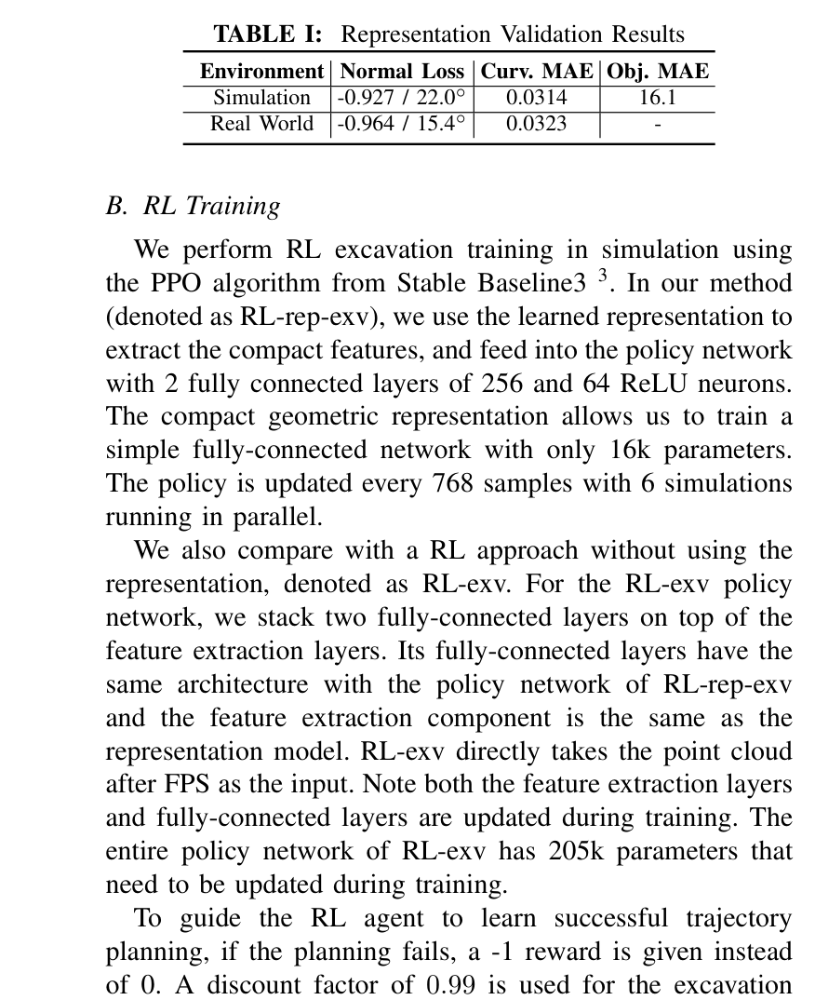
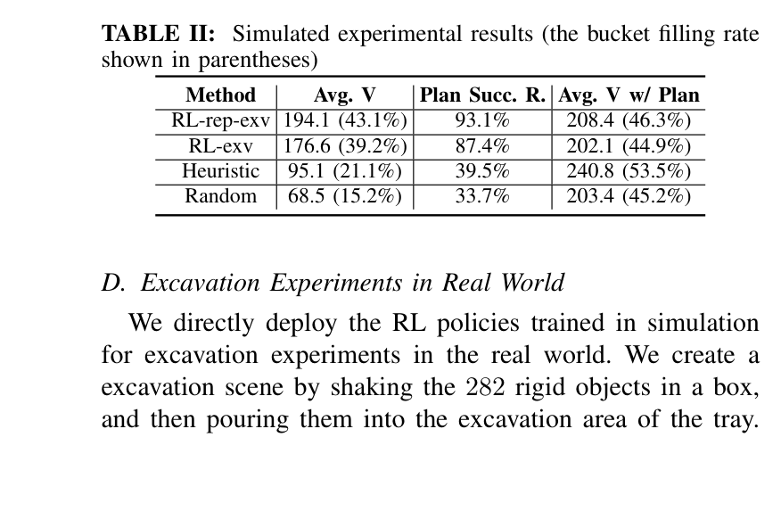
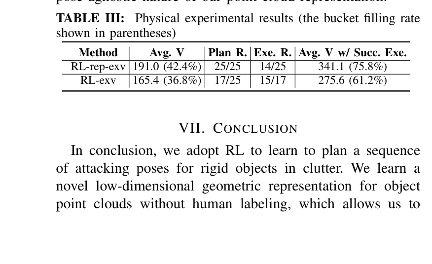

한줄 요약 — 불규칙 강체 점군을 지역 normal·curvature와 전역 object count로 사전학습한 뒤 encoder를 고정하고 PPO가 연속 굴착의 공격점·각도를 정하게 해 원시 점군 end-to-end 정책보다 학습시간과 계획성공률을 개선했으나, open-loop 궤적과 Franka의 힘 한계 때문에 실제 25회 중 11회가 접촉 저항으로 멈춘 기하-정책 분리형 연구다.
1.연구 배경 및 동기
강체 군집의 현재 장면과 다음 굴착을 함께 고려하는 문제
토사·모래와 달리 파쇄암·목재 블록 같은 불규칙 강체 군집은 접촉 동역학이 복잡하고 형상이 다양하며 표면 일부만 관측된다. 한 번의 굴착은 물체 배열을 바꾸므로 다음 굴착의 성공 가능성과 체적에도 영향을 준다. 기존 단일 굴착 최적화만으로는 material loading이나 trenching처럼 여러 번 이어지는 작업의 장기 누적 성능을 직접 다루기 어렵다.
저자들은 장면 점군을 상태, 공격 pose를 행동, 굴착 체적을 보상으로 하는 MDP를 구성하고 PPO로 열 번의 연속 굴착을 학습한다. 원시 점군 end-to-end RL의 데이터 비용을 줄이기 위해 normal·principal curvature·물체 수를 예측하는 PointNet++ 표현을 먼저 학습하고 고정한다. 지역 접촉 형상과 전역 자재량을 동시에 담은 작은 표현이 학습 효율과 sim-to-real 전이를 높이는지가 핵심 질문이다.

원문 Figure 1 · PDF p.2 — Fig. 1: The figure shows an excavator excavating fragmented rocks, with joints labeled in red. An excavator has a total of 4 degrees of freedom, excluding the mobile base.

원문 Figure 2 · PDF p.3 — Fig. 2: This figure adapted from [8] visualizes our excavation trajec- tory representation in the task space. The numbers in blue circles represent the sequence of our five excavation phases. The bucket poses with ID from 1 to 5 represents the attacking, penetration, dragging, closing, and lifting phase respectively.
선행 연구의 한계
토사 중심 모델과 제어는 불규칙 강체의 확률적 접촉과 큰 저항을 설명하기 어렵다.
기존 강체 굴착 학습은 주로 한 번의 굴착 성공·체적을 최적화해 장기 순서를 다루지 않았다.
원시 점군 end-to-end DRL은 큰 정책망과 많은 상호작용 데이터가 필요하다.
RGB 중심 표현은 카메라 시점·외관 차이에 민감해 simulation에서 실제 장면으로 옮기기 어렵다.
이 연구의 기여
강체 군집의 연속 굴착 궤적 계획을 장기 보상 MDP와 PPO로 정식화했다.
사람 라벨 없이 normal·curvature·object count를 학습하는 PointNet++ 기하 표현을 제안했다.
280차원 고정 표현과 16k-parameter 정책으로 end-to-end 205k-parameter 정책보다 빠르게 학습했다.
PyBullet과 실제 Franka·282개 미관측 목재 블록에서 계획·실행·체적 성능을 분리 평가했다.
2.방법론 및 시스템 구성
굴착 궤적은 attacking, penetration, dragging, closing, lifting의 다섯 단계다. 공격점의 z는 RGB-D height map에서 얻고, 최대 끌기길이·닫힘각·들기높이는 고정해 행동을 tray 좌표계의 (x,y,α)로 축약한다. 정책은 현재 점군에서 공격 pose를 고르고, 작업공간 궤적은 100Hz 관절 waypoint로 이산화해 IK·self-collision·tray collision을 확인한 뒤 Panda joint impedance controller에 open-loop로 보낸다.
표현망은 점군을 FPS로 7,000점에 맞춘 뒤 PointNet++ 다섯 계층으로 1,024→256→64→16→8점까지 줄인다. 마지막 8점의 3D 위치와 32차원 특징을 연결한 280차원을 PPO 입력으로 쓴다. decoder는 점별 normal·curvature, 별도 FCL은 장면 object count를 예측한다. representation encoder는 RL 동안 고정돼 기하 사전학습과 정책 최적화를 분리한다.
처리 파이프라인
1
장면·행동 정의
점군을 상태, 굴착 체적을 보상, tray 좌표계 공격 pose (x,y,α)를 행동으로 하는 순차 MDP를 만든다.
굴착 위치 선택은 장면 전체에서 물체가 많은 곳을 찾는 전역 추론과, 버킷이 닿을 표면의 normal·curvature를 이해하는 지역 추론을 모두 요구한다. PointNet++의 계층 특징은 이 두 규모를 결합하고, 물체 수 보조과제는 표면만 보이는 점군에서 장면 전체량을 추론하도록 유도한다. 마지막 280차원 표현은 정책망을 작게 유지한다.
추출점 수는 1,024·256·64·16·8, 특징차원은 128·128·128·64·32다.
simulation normal MAE는 22.0°, 실제 장면은 15.4°였다.
curvature MAE는 simulation 0.0314, 실제 0.0323이며 simulation object-count MAE는 16.1이다.
공격 pose만 학습하는 계층형 정책
PPO는 궤적의 모든 waypoint를 직접 만들지 않고 (x,y,α)만 결정한다. z는 height map, 끌기길이·닫힘각·들기높이는 규칙으로 정하고 IK와 충돌 검사가 실행 가능성을 확인한다. 이 축약은 탐색공간을 줄여 연속 굴착 순서를 학습하기 쉽지만 접촉 중 힘과 primitive 형상을 정책이 바꾸지 못하는 한계를 동시에 만든다.
RL-rep-exv와 RL-exv는 각각 30,000 sample, 즉 3,000 episode를 학습했다.
지각 전이와 접촉 실행을 분리한 실제 검증
실제 실험의 282개 목재 블록은 학습에 없었고 카메라 pose도 simulation과 달랐다. 기하 표현 정책은 모든 25개 공격 pose에서 유효 관절 궤적을 만들었지만 11개는 큰 저항으로 버킷이 멈췄다. 이는 점군 표현의 시점 전이와 실제 힘 제한이 별개 문제이며, 계획 성공이 작업 성공을 보장하지 않음을 수치로 보여준다.
실제 관입깊이는 0.07m, 최대 끌기길이는 0.1m로 줄였다.
Panda joint impedance 강성은 100Nm/rad이며 궤적은 open-loop다.
관입 시 작은 wiggle을 주지만 힘 피드백 기반 재계획·반응제어는 없다.

원문 Figure 6 · PDF p.6 — Fig. 6: The training curves of RL-exv and RL-rep-exv. The y and x axes represent the RL reward and the number of training samples.
4.실험 결과
실험 환경·장비·데이터
PyBullet에 bucket을 단 Franka Panda, digging·dumping tray, RGB-D sensor를 구성했다.
1~7cm 무작위 vertex의 convex object 100k개를 만들고 density를 2,700kg/m³로 설정했다.
실제는 Azure RGB-D, 450cm³ bucket, 학습에 없던 목재 블록 282개와 density 500kg/m³를 사용했다.
표현·RL 학습은 Xeon Silver 4114, RAM 32GB, GTX 1080 두 장에서 수행했다.
실험 프로토콜
표현 데이터 약 35,000장면을 90% train·10% test로 나누고 batch 16, Adam, lr 0.01, 10 epoch로 학습했다.
simulation은 방법별 100 episode·1,000굴착이며 RL 두 방법과 highest-point heuristic·random을 비교했다.
실제는 정책별 5 episode, episode당 5회로 총 25굴착을 수행하고 덤핑 질량과 density로 체적을 계산했다.
비교 기준
동일 PointNet++를 end-to-end 갱신하는 RL-exv
항상 가장 높은 공격점을 고르는 heuristic planner
공격점을 무작위로 고르는 random planner
평가 지표
average excavation volume과 bucket filling rate
trajectory planning success rate
실제 trajectory execution success rate
valid·successful excavation의 평균 체적
표현 MAE, 정책 parameter 수와 총 학습시간
핵심 결과 해석
기하 표현 정책은 16k parameter와 126시간 39분 학습으로, 205k parameter·163시간 28분의 end-to-end 정책보다 작고 빨랐다. simulation 평균 체적은 194.1cm³(43.1%), 계획성공률은 93.1%로 RL-exv의 176.6cm³(39.2%), 87.4%를 모두 앞섰다. heuristic은 유효 계획의 평균 체적은 240.8cm³로 높았지만 계획성공률이 39.5%에 그쳤다.
실제에서 RL-rep-exv는 평균 191.0cm³(42.4%)와 계획 25/25를 기록해 RL-exv의 165.4cm³(36.8%), 계획 17/25보다 좋았다. 그러나 접촉 실행은 14/25만 성공했고 성공한 경우 평균은 341.1cm³(75.8%)였다. RL-exv는 유효 계획 17개 중 15개를 실행했다. 기하 표현은 충돌·IK 계획을 개선했지만 Franka의 힘 한계는 해결하지 못했다.
정량 결과
평가 항목
정량 결과
조건·맥락
원문 근거
RL-rep-exv 학습시간
126시간 39분
16k-parameter 기하 표현 정책
PDF p.5
RL-exv 학습시간
163시간 28분
205k-parameter end-to-end 정책
PDF p.5
simulation 평균 체적
194.1 cm³ (43.1%)
RL-rep-exv, 1,000회
PDF p.6
simulation 계획성공률
93.1%
RL-rep-exv; RL-exv는 87.4%
PDF p.6
실제 평균 체적
191.0 cm³ (42.4%)
RL-rep-exv, 25회
PDF p.7
실제 계획·실행 성공
25/25 계획, 14/25 실행
RL-rep-exv
PDF p.7
실제 성공 실행 평균 체적
341.1 cm³ (75.8%)
RL-rep-exv의 14회 성공
PDF p.7
실패 사례와 경계조건
실제 RL-rep-exv 25회 중 11회가 강체 저항과 Franka의 제한된 힘·토크 때문에 버킷이 걸렸다.
RL-exv는 25개 공격 pose 중 8개가 IK 또는 tray collision으로 유효 관절 궤적을 만들지 못했다.
heuristic·random은 유효 계획의 체적은 클 수 있지만 계획성공률이 39.5%·33.7%로 낮았다.
policy가 primitive 형상과 접촉 피드백을 바꾸지 못해 perception sim-to-real 성공이 execution 성공으로 이어지지 않았다.

원문 Figure 8 · PDF p.7 — Fig. 8: We qualitatively show the excavation results of one complete episode for the simulated experiments of RL-rep-exv. The red cross in each image represents its planned 2D attacking point. View order: left to right and top to bottom.

원문 Figure 10 · PDF p.7 — Fig. 10: The two rows of images show two excavation episodes for RL-rep-exv in the real world. We also label the bucket filling volume (if not stuck).

원문 Figure 11 · PDF p.7 — Fig. 11: Two typical failure cases of excavation planning due to collision with the tray are shown in the figure. The collisions in the left and right images happen during the closing and dragging phases respectively.
5.한계 및 향후 연구
현재 한계
실제 플랫폼이 소형 Franka와 tray이며 유압 굴착기의 스케일·동역학·환경을 검증하지 않았다.
PPO는 공격 pose만 정하고 관입·끌기·닫기·들기는 고정된 open-loop primitive다.
큰 접촉 저항을 감지해 속도·깊이·방향을 바꾸는 force feedback·reactive control이 없다.
실제 object-count ground truth가 없어 전역 보조과제의 real-world 정확도를 정량 평가하지 못했다.
향후 연구
simulation·real representation distribution을 맞춰 지각 sim-to-real gap을 더 줄인다.
유효 계획 안에서 실제 굴착체적을 높이도록 정책 목적과 데이터를 개선한다.
불확실한 광산 작업을 위한 replanning·reactive force control을 결합한다.
정책과 primitive를 실제 유압 굴착기로 옮겨 누적체적·걸림률·접촉력을 검증한다.
6.한마디로 정리
핵심 방법은?
normal·curvature·object count로 학습한 280차원 PointNet++ 표현을 고정하고 PPO가 연속 굴착 공격 pose를 선택한다.
핵심 결과는?
simulation 194.1cm³·93.1%, 실제 191.0cm³·계획 25/25로 end-to-end 정책을 앞섰다.
한계는?
실제 실행은 14/25로, open-loop primitive와 로봇 힘 한계가 기하 표현의 계획 이득을 크게 깎았다.
자율굴착 관점에서 이 연구는 장기 작업순서와 단일 궤적 실행을 분리한다. 상위 정책은 점군 기하로 어디를 어떤 각도로 공격할지 정하고, 고정 primitive가 실제 버킷을 움직인다. 이 계층은 탐색을 줄이지만 실제 현장에서는 하위 제어가 힘·토크·slip을 읽고 관입과 끌기를 바꾸어야 상위 계획의 이득이 유지된다.
25/25 계획과 14/25 실행의 간극은 필드로봇 평가에서 perception·planning success와 physical execution success를 따로 보고해야 함을 보여준다. 실제 굴착기 후속 연구는 point-cloud 상위정책에 유압압력·관절속도 기반 residual controller를 붙이고, 누적 체적뿐 아니라 걸림·최대 접촉력·계획실패를 함께 최적화할 수 있다.
normal·curvature 보조과제는 토질·암석 형상 사전학습을 위한 자기지도 표현으로 확장할 수 있다.
object count 대신 더미 체적·입도 분포를 예측하면 실제 자재량과 더 직접 연결된다.
상위 공격 pose와 하위 force-residual 제어를 결합한 계층형 정책이 필요하다.
평가에는 episode 누적체적, 계획·실행 성공률, 걸림률, 최대 힘, sim-to-real 하락폭을 포함해야 한다.
7.전체 그림·표
본문 핵심 위치에 배치하지 않은 원문 Figure와 Table을 원문 페이지 순서로 수록한다.

원문 Table I · PDF p.5 — TABLE I: Representation Validation Results

원문 Table II · PDF p.6 — TABLE II: Simulated experimental results (the bucket filling rate shown in parentheses)

원문 Table III · PDF p.7 — TABLE III: Physical experimental results (the bucket filling rate shown in parentheses)